Color Belt · Part 2 · P1 · Event roster (CB1, CB2, CB3, CB9)
Everything here was already decided: Star's v0.518 answers and the shared parts' looks (v1.103–v1.107), landed on Color Belt's event roster. (Preview screenshots, fake data. The “after” is drawn on top of the real page with the shared parts' real markup; nothing in the app is built yet.)
Today
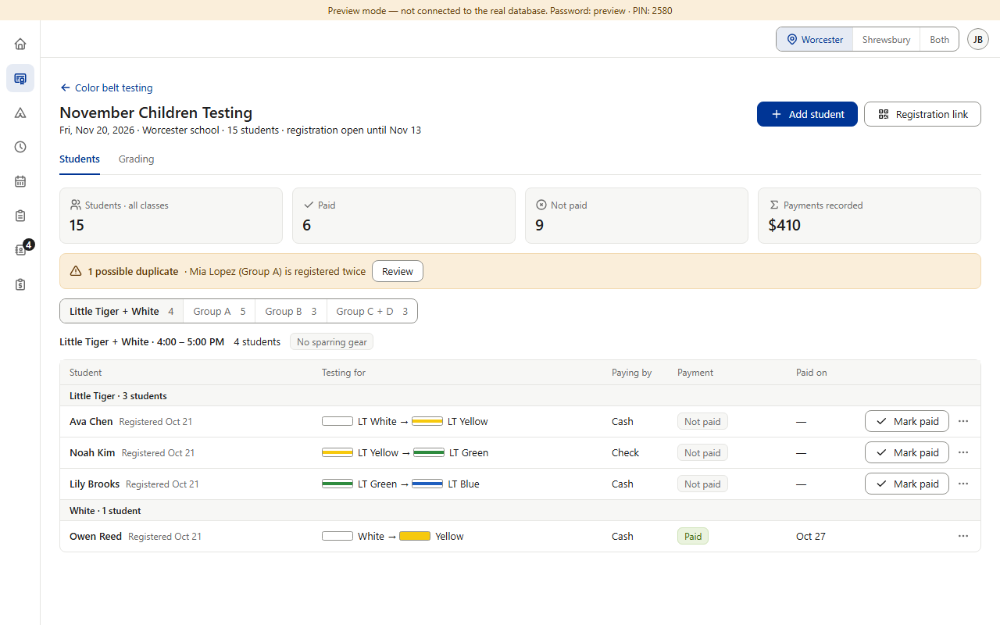
1. Mark paid records the payment at once, by the family's choice (Ava: Cash). If they pay another way, the desk has to fix it afterwards.
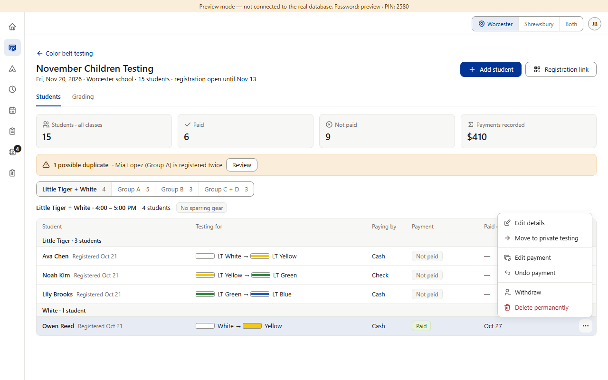
2. ⋯ → Undo payment acts at once, with no question. There is no Print receipt.
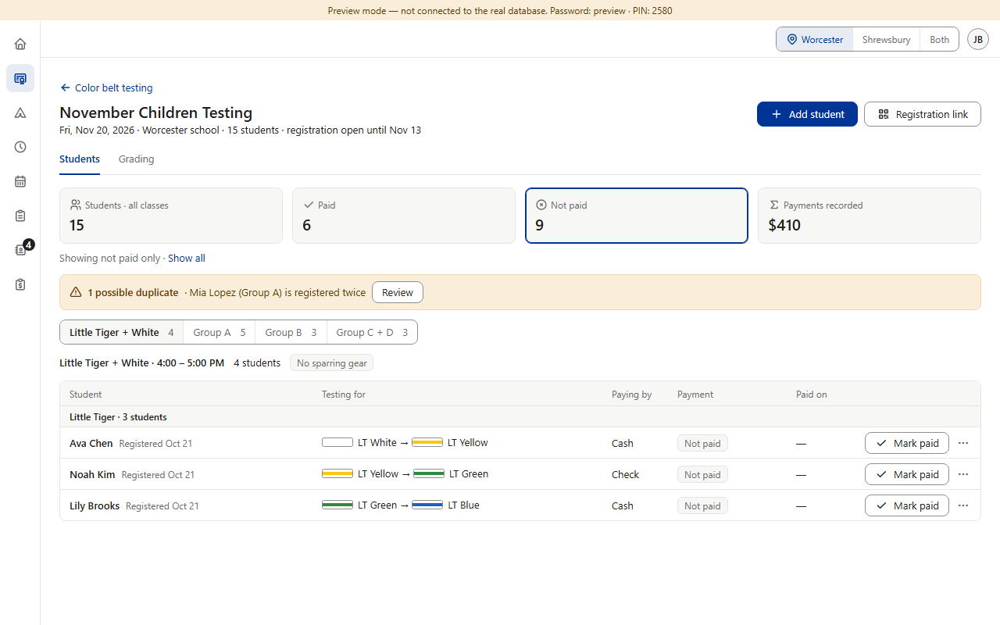
3. Count cards (here Not paid is on). Already drawn like the shared cards.
After
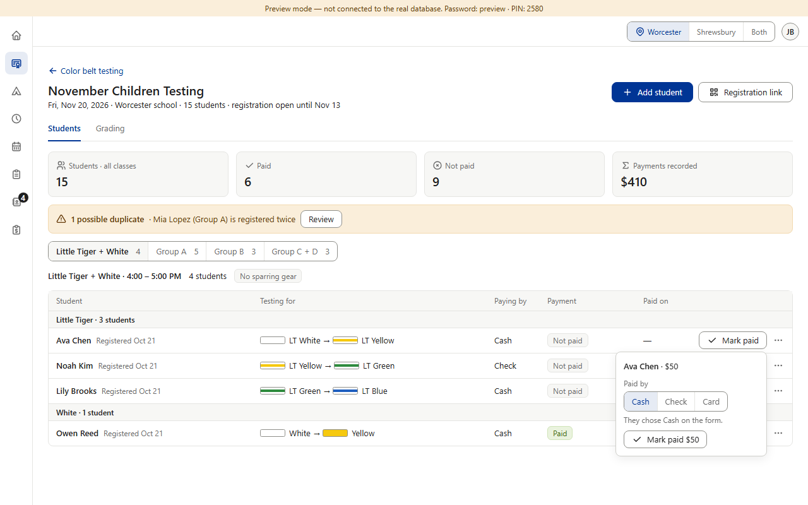
1. CB1 · Mark paid opens the shared box under the button: name · amount (worked out by the database, shown, not typed), Paid by preset to the family's choice with “They chose Cash on the form.” (or “… at the desk.”), then Mark paid $50. Date = today. Picking Check or Card also changes “Paying by” (v0.418). “Payment recorded” + Undo stays.
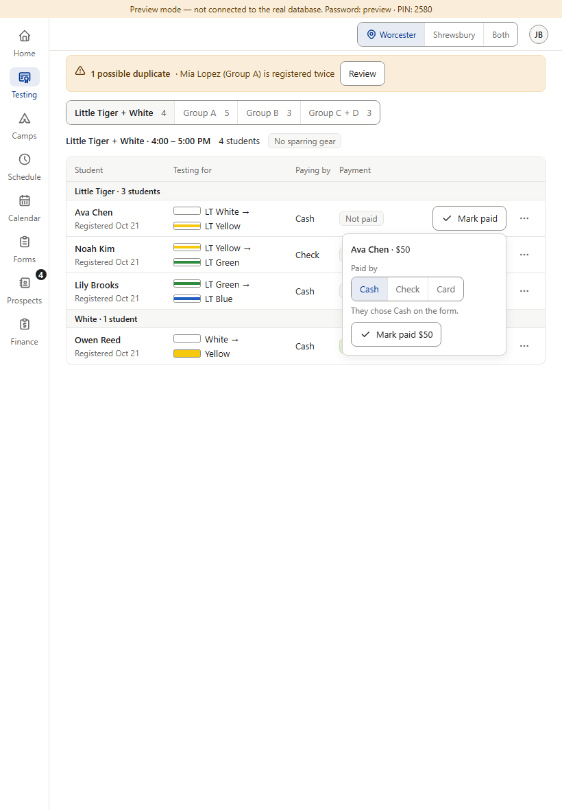
Tablet 820
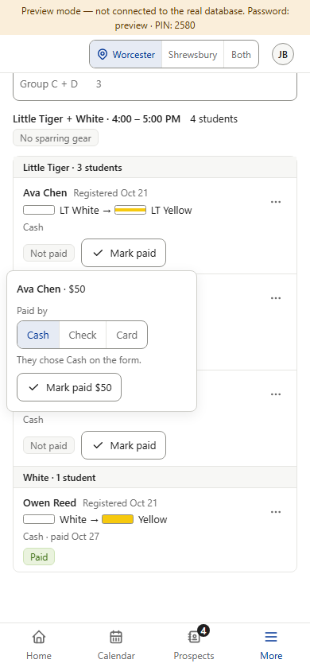
Phone 390
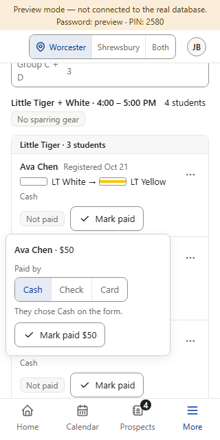
320 wide
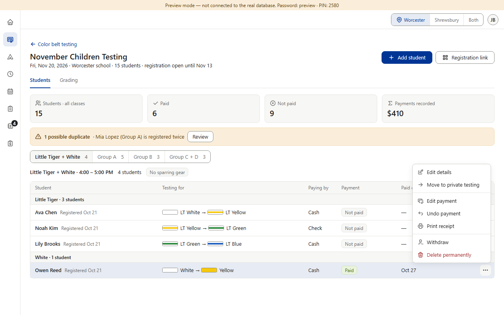
2. CB2 · Print receipt ends the ⋯ money group, for staff and admins, on a row with a payment. Hidden while Hide private details is on. (The receipt itself is mockup P3.)
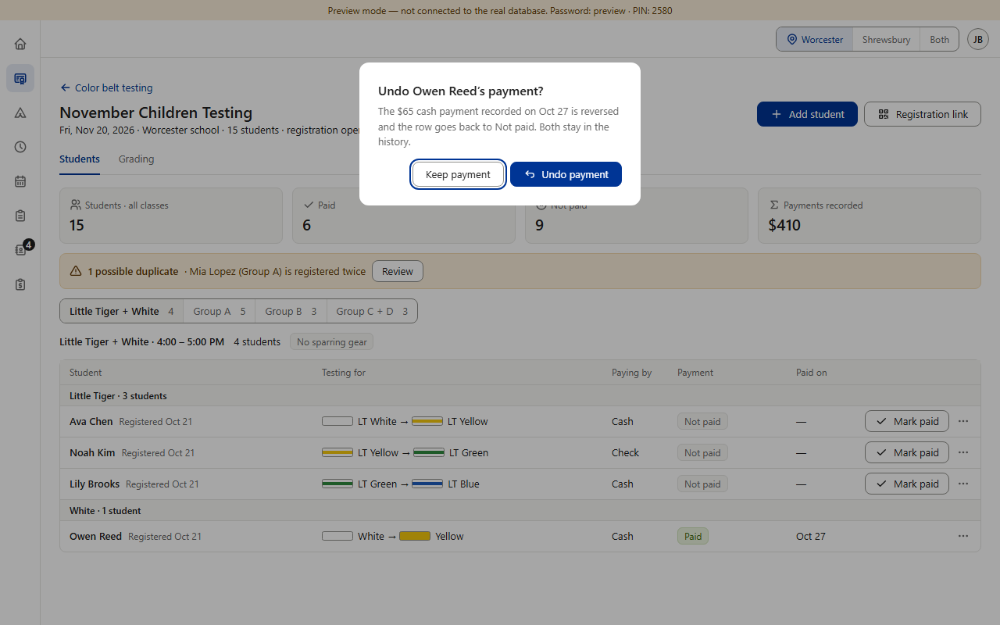
3. CB3 · Undo payment asks first (Star's words): “Undo Owen Reed's payment?” · Keep payment (focused first) · Undo payment (blue: nothing is lost for good). “Undoing…” while it works. The toast's Undo right after Mark paid stays one tap.
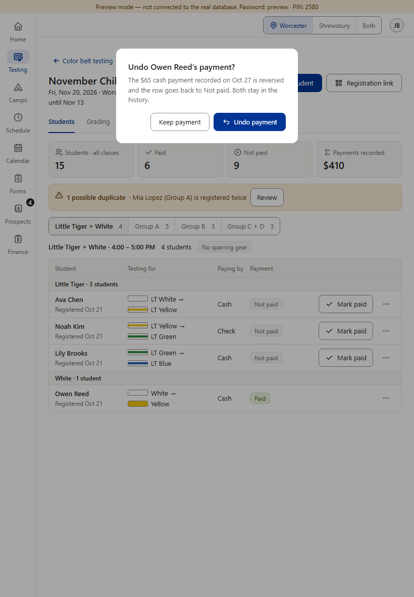
Tablet 820
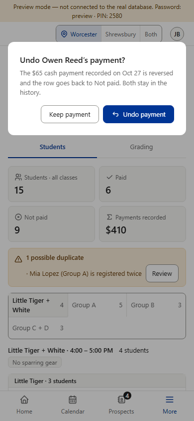
Phone 390
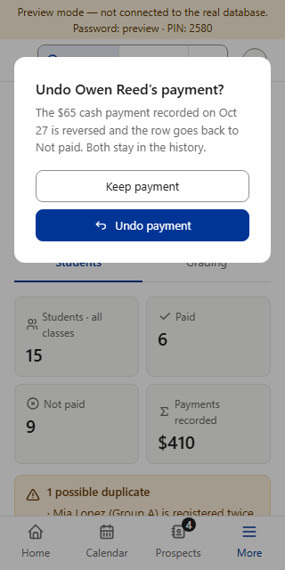
320 wide: the buttons stack
4. CB9 · Count cards: no visible change. The roster's own cards are swapped for the shared CountCards in the code; they already look like v1.107 (blue edge on the card that's on, 16 px icons, Payments recorded a plain total, not a button).
Nothing to decide here — all copied from Star (v0.518) and the shared parts (v1.103–v1.107). OK as drawn?